Hemos visto de qué tratan las series elegidas, ahora bien, ¿qué relación tienen las series con la moda? No es una novedad que la televisión y el cine imponen modas a través de películas y series, donde se presentan estilos de vida diferentes que se adaptan a distintos tipos de consumidores. Y eso exactamente es lo que ocurre con el vestuario.
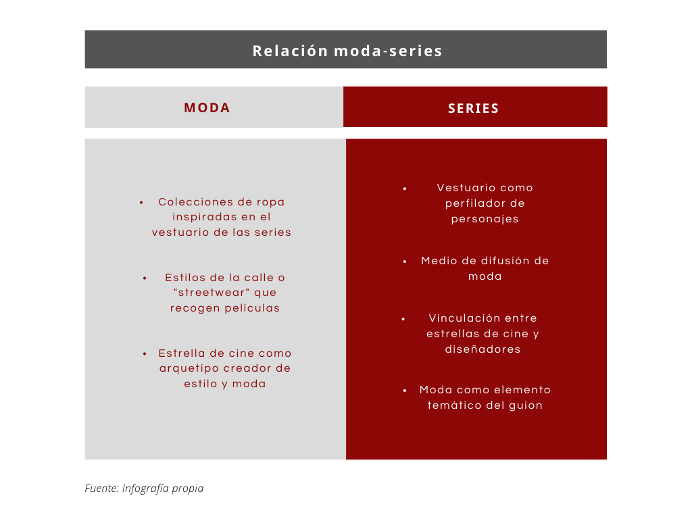La Casa de Papel
El éxito de una serie puede venir, en parte, por su vestuario. Así lo indica Javier Gómez, guionista de La Casa de Papel , pues comenta que tiene algo que ellos no habían calculado, “esos elementos muy identificables, iconográficos, como las máscaras o como el uniforme de color rojo”.
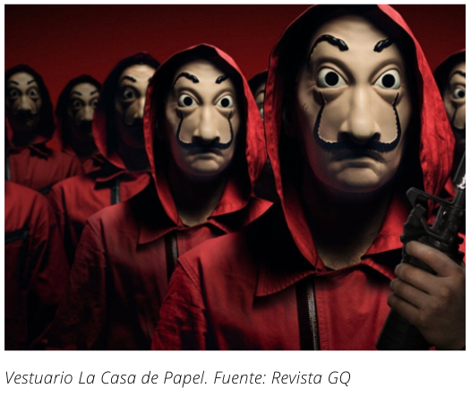 En las dos primeras temporadas la encargada del vestuario de La Casa de Papel fue Rosa Solano, quien ha trabajado también en la segunda temporada de la serie La Casa de las Flores , también de Netflix; y en Pequeñas coincidencias , de Amazon Prime Video. Sin embargo, en la tercera, cuarta y quinta temporada, ha sido el diseñador Carlos Díez, ganador de un Goya en 2017 por el vestuario de la película Los últimos de Filipinas y encargado del vestuario de Sky Rojo , quien ha vestido al profesor y su banda.
En la paleta cromática de la serie destacan principalmente los tonos rojos. El vestuario representa muy bien la tonalidad que caracteriza a la serie gracias al uso de los monos rojos que llevan los atracadores y, más tarde, también los rehenes. A lo largo de la historia, el rojo ha estado asociado con la violencia y la revolución, tal vez porque es el color de la sangre. En LCDP , el espíritu inconformista y transformador lo representa "la resistencia" y poco a poco la vestimenta de la banda se convierte en un símbolo de lucha para la ciudadanía. Junto al característico mono rojo, los asaltantes también llevan una máscara con la cara de Salvador Dalí. ¿Qué hay mejor para representar a “la resistencia?, si Dalí se enfrentó al mundo y a las leyes para transgredir con su arte.
Podemos destacar el look del personaje de Tokio, que está inspirado en el personaje Mathilda, interpretado por Natalie Portman en El perfecto asesino (1994). No solo nos recuerda a ella el corte de pelo, sino también el choker, la gargantilla más famosa de los 90 que volvió a ponerse de moda hace unos años.
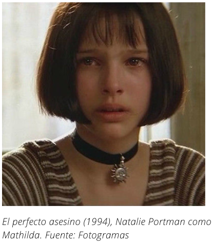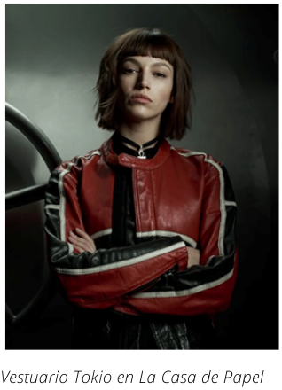Desde luego, la vestimenta de La Casa de Papel es todo un icono. Además, ha servido de inspiración para marcas como Diesel o Pull & Bear, que en estos años han lanzado colecciones cápsula basadas en la estética y personajes de la serie. Fue en el verano de 2019, cuando dicha marca (Diesel) sacó una colección cápsula. En 2020, llegó una colección de la mano de Pull & Bear.
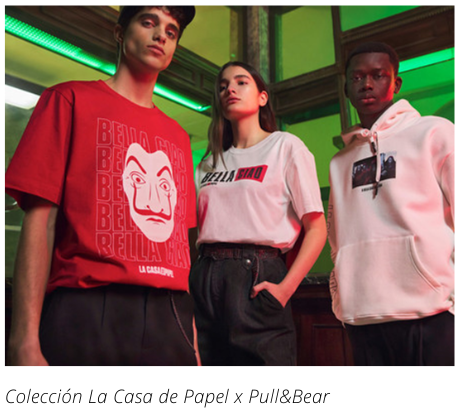Las Chicas del Cable
Sin duda, uno de los aspectos más destacados de esta ficción es el vestuario. Su responsable, la figurinista Helena Sanchís, considera clave el hecho de que se haya recreado una década en la que las mujeres empezaban a incorporarse al mercado laboral. La estilista contaba en una entrevista para la Vanguardia , que es una etapa en la que “desaparecen los corsés, se sueltan las cinturas, se acortan las faldas…Es un momento de liberación, o por lo menos, de deseo de”.
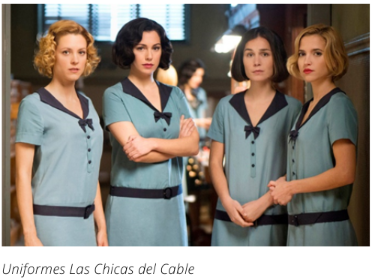Uno de los estilismos más representativos de Las Chicas del Cable es el uniforme que visten las cuatro protagonistas en el trabajo: un vestido azul con cinturón y lazo en el escote. Para elaborarlo, Sanchís se inspiró en las telefonistas de los años 20 buscando diferentes archivos, así como el patrón para producirlo y que posteriormente adaptó al cuerpo de cada actriz.
Para completar el vestuario, la figurinista se documentó para tener una referencia, y, a partir de ahí, fue seleccionando y elaborando las prendas necesarias para la serie. La mayor parte de las prendas de las actrices están hechas en el taller de la figurinista, aunque el estilismo de los hombres, y algunos looks femeninos, se han confeccionado en la sastrería Cornejo de Madrid. Un detalle curioso es que algunas prendas llevan partes originales, como el tejido, los cuellos o los botones.
En la producción también se ven vestidos originales de la época que la estilista consiguió en una pequeña sastrería italiana, diseños que llevan las cuatro protagonistas durante las fiestas y cenas a las que acuden tras salir de trabajar.
Cada protagonista tiene un estilo que refleja su personalidad. Son muy diferentes, por ejemplo, Marga es la más humilde y por eso, se han utilizado tejidos más sencillos, como algodones y linos, y colores menos llamativos; mientras que para Carlota, que es una joven de familia adinerada a la que le gusta rebelarse, se escogen estilismos con vestidos modernos, contrastes y geometrías. Algo que habría servido de inspiración para marcas de fast fashion como Zara (Inditex).
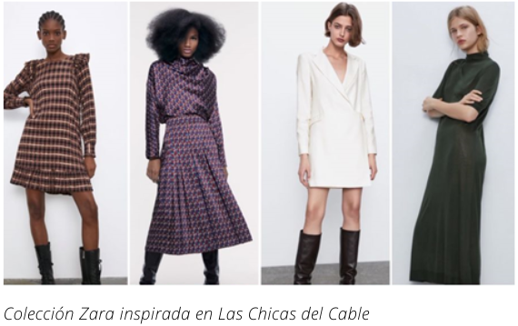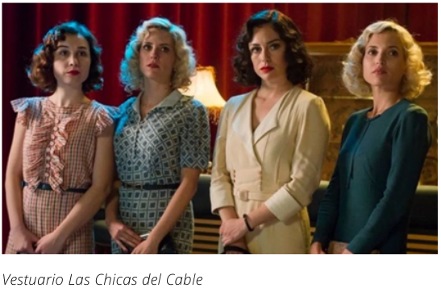Stranger Things
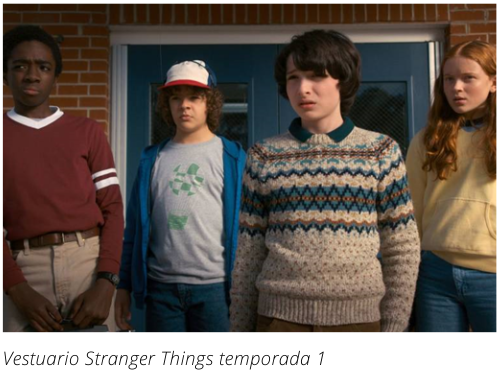 El éxito de la serie de Netflix, ambientada en los años 80s, ha vuelto a poner de moda el estilo de esa década influyendo en las últimas tendencias. Así, el estilo retro e informal inunda cada una de las escenas de la serie con rasgos característicos de esa época, como el exceso de colorido, patrones atrevidos y hombros XL. Stranger Things busca reflejar esa esencia, invitando a las nuevas generaciones a apreciar el estilo memorable de la década. El vestuario de la serie no solo es un elemento crucial de su ambientación, sino que ha conseguido hacer el recorrido inverso y se ha colado en las tiendas low cost más conocidas para hacer que vuelva el estilo ochentero.
Kimberly Adams es la directora de vestuario, encargada de crear el germen de la caracterización de los personajes. También han participado, a lo largo de las temporadas, las diseñadoras Malgosia Turzanska, Amy Parris y Kim Wilcox, que coinciden en que fue un reto adaptar la ropa a los actores, dado que estaban en plena edad de crecimiento y en pocos meses cambiaban de talla. Según cuenta Kimberly en una entrevista para el canal de Youtube StealTheSpotlight , usó de todo como referencia de estilo: "revistas, catálogos, fotografías familiares y hasta orlas reales de las universidades". Todo tenía que ser auténtico. La máxima era que los personajes "no podían parecer caricaturas de los años 80".
Puedes ver la entrevista completa en inglés aquí:
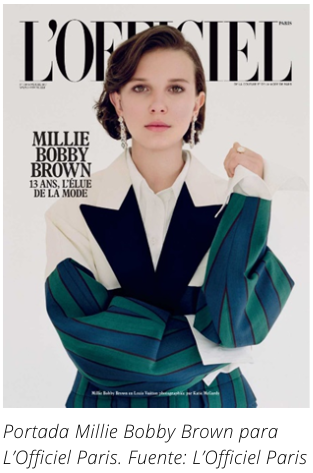Entre las prendas claves de los años 80 que aparecen en la serie destacan los pantalones vaqueros de cintura alta y rectos combinados con chaqueta también vaquera, camisas de cuadros tipo leñador, la franela y la pana como tejidos estrella, los petos y los monos, los calcetines de baloncesto altos y las zapatillas blancas. Igualmente, vemos los jerséis de lana con motivos geométricos como el que lleva Mike y que Loewe ha versionado.
La influencia de Millie Bobby Brown como nuevo icono de estilo de la “Generación Z” ya es más que evidente, pues ha estado en varios desfiles de la Semana de la Moda e incluso se ha convertido en chica de portada de revistas de moda como L’Officiel Paris . Este efecto se ha trasladado con cada estreno de las temporadas a las pasarelas y, de ahí, a las calles. Por ejemplo, las marcas H&M, Lefties, Nike, Primark o Pull&Bear han sacado colecciones inspiradas en Stranger Things .
Sex Education
La diseñadora de vestuario para esta serie es Rosa Dias, diseñadora con experiencia en obras de teatro y ópera. Si bien no se conoce mucho de ella en la pantalla, la diseñadora definitivamente tiene muy claro la relación entre la identidad y el vestir. Dias señala en un artículo de L’officiel que el vestuario que ella quiso crear para esta serie era “atemporal y no especifico”. La vestimenta de los diferentes personajes en la serie cuenta con elementos de la década de los años 70, 80 y hasta 90, al mismo tiempo incorporando ciertos detalles que pueden recordar a tendencias actuales. Al tener referencias de varias épocas, se crea todo un efecto nostálgico, como ocurre con Stranger Things . Al mismo tiempo, crea cierta atracción hacia públicos no tan jóvenes.
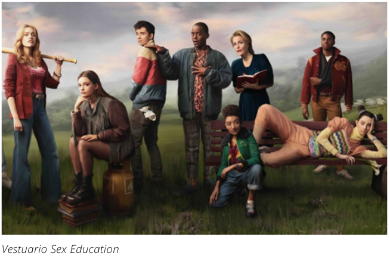Como en cualquier serie adolescente, el vestuario es utilizado como una herramienta para expresar la personalidad del personaje, pero en el caso de Sex Education , la importancia del vestir es llevado a otro nivel. Cada outfit es crucial para la expresión del estado mental de los adolescentes de Moordale. 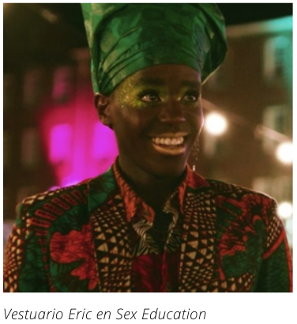Se refleja de forma clara en Eric, que, sobre todo en las últimas temporadas, utiliza un vestuario bastante llamativo, con patrones que a ojos de los demás puede que ni si quiera sean armónicos. Se puede decir que es el personaje que más desarrollo y evolución tiene en cuanto a moda se refiere, ya que mezcla toques de la cultura ghanesa con coloridos maquillajes. En una entrevista para Off Colour , Dias afirmaba que “con Eric, sólo quería crear una persona que tuviera mucha confianza en sí misma”.
Por su parte, Maeve normalmente utiliza un look grunge de los 90, que conecta con su personalidad rebelde. Y Ruby, reconocida como la más popular del instituto, utiliza prendas de lo más fashion , repletas de color, para “pretender ser alguien más por medio del vestuario”, así lo indica su diseñadora. Por desgracia, en la tercera temporada cambia la dinámica de la serie con la aparición de uniformes y estrictas reglas binarias, dejando de lado la inclusividad de algunos personajes queer , como es el caso de Cal.
Una vez más, Pull & Bear ofrece una colección inspirada en la serie, con sudaderas, diseños tie-dye, una falda de tablas y varias camisetas con escenas de la serie.
© 2022 - Andrea Higuera Herrero
QUÉ COMUNICA LA MODA A TRAVÉS DE LAS SERIES DE NETFLIX